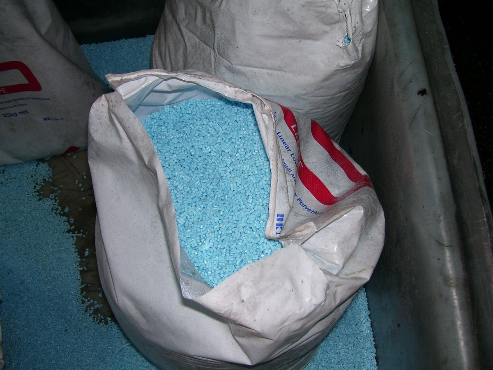
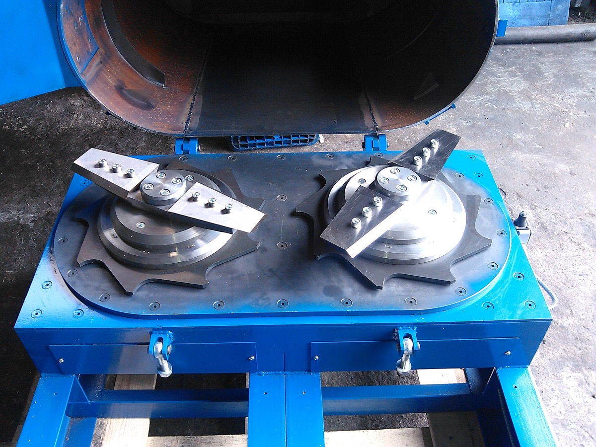
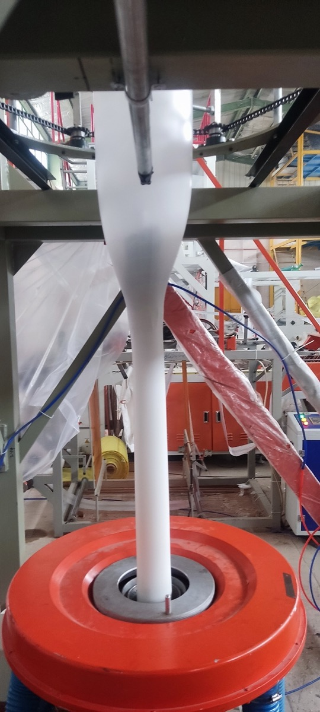
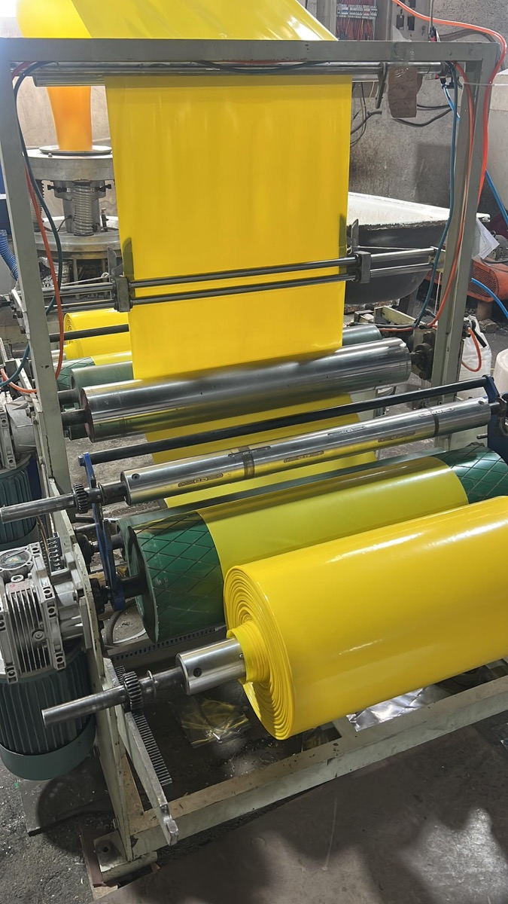
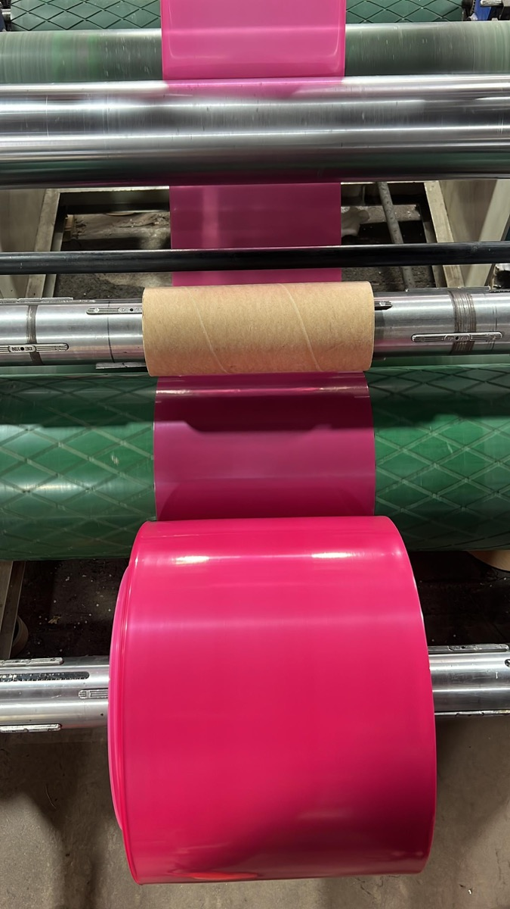
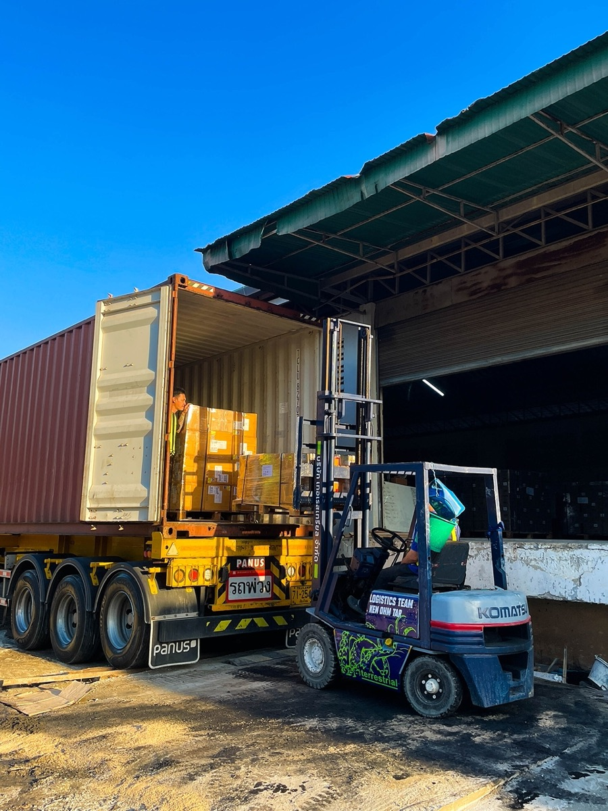
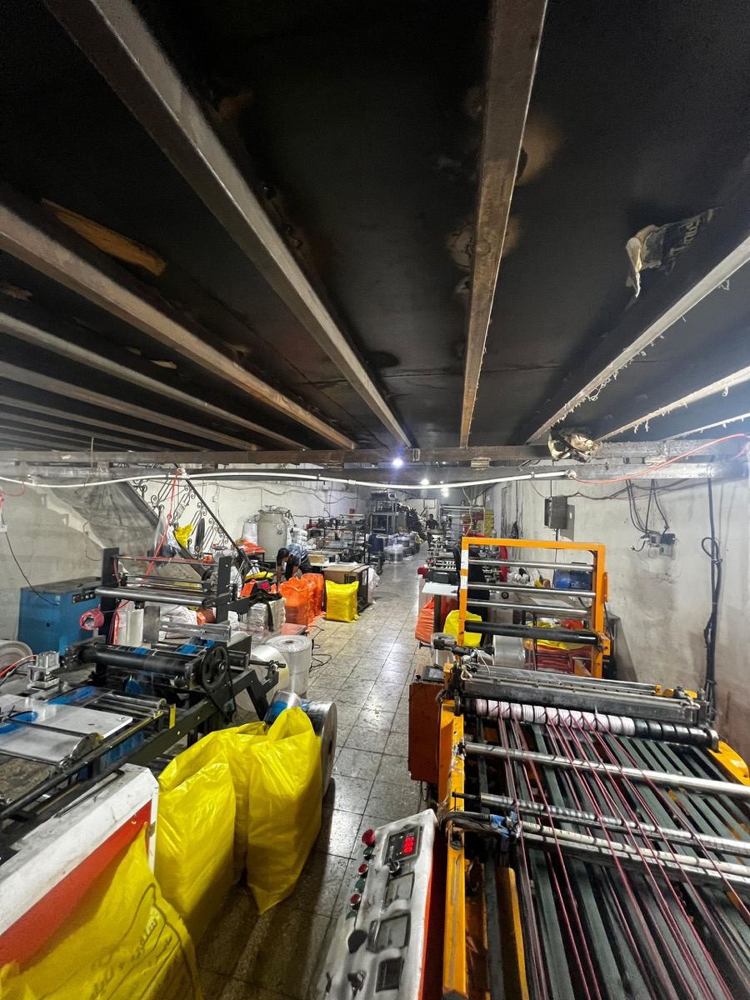

Фотографии
Часть снимков на сайте взята из открытых коллекций и используется по свободным лицензиям. Они показывают оборудование и продукцию такого же типа, а не наш завод.

Enfardadora automatica
MOVITEC WRAPPING SYSTEMS · CC BY 3.0 · Wikimedia Commons
Shrink wrapped case of bottles
Rlsheehan · CC BY-SA 4.0 · Wikimedia Commons
Plastic tunnel
No machine-readable author provided. Rasbak assumed (based on copyright claims). · CC BY-SA 3.0 · Wikimedia Commons
Strawberry field using black mulch in Umm Haratayn al-Gharbiyah, Homs
Hayan Alhasan · CC BY-SA 4.0 · Wikimedia Commons
Pellet azul
ISIPLAST S.A de C.V · CC BY-SA 4.0 · Wikimedia Commons
Navid Selfon plant - film printing press, Tehran (2026)
Navid Selfon · CC BY-SA 4.0 · Wikimedia Commons
Plastic pellets
SuSanA Secretariat · CC BY 2.0 · Wikimedia Commons
Двухроторный агломератор с откинутым корпусом
Vad1fx · CC BY-SA 3.0 · Wikimedia Commons
AKO SANAT PLAST ABA film blowing machine
Akosanatplast · CC0 · Wikimedia Commons
Navid Selfon plant - yellow plastic film on rollers, Tehran (2026)
Navid Selfon · CC BY-SA 4.0 · Wikimedia Commons
Navid Selfon plant - pink plastic film on rollers, Tehran (2026)
Navid Selfon · CC BY-SA 4.0 · Wikimedia Commons
Container loading with forklift at warehouse in Thailand
Goterrestrial · CC BY 4.0 · Wikimedia Commons
Navid Selfon plant - production hall, Tehran (2026)
Navid Selfon · CC BY-SA 4.0 · Wikimedia Commons


.jpg){kind=link}


.jpg){kind=link}
.jpg){kind=link}

.jpg){kind=link}